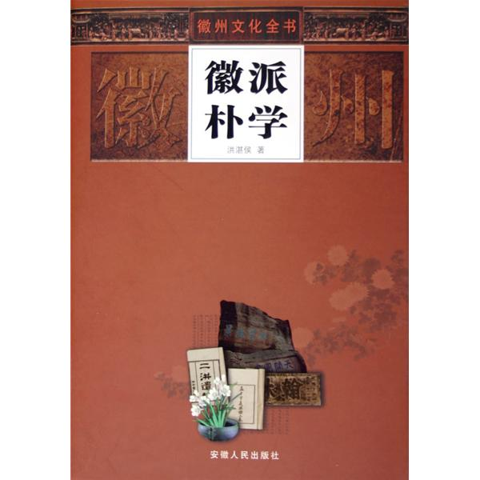

徽州朴学

什么是徽州朴学？它又称考据学，针对理学的空疏而言。朴学主张学问重史实依据，解经由文字人手，以音韵通训诂，以训诂通义理。
在中国经学史上，清代徽派朴学被称为皖派、皖学，皖学创始于江永而成于戴震。戴震是徽州朴学的集大成者，他的《孟子字义疏证》一书，在批判程朱理学方面有着振聋发聩的意义。但徽派朴学发展到后期，因繁琐考据，唯汉是求，研习内容脱离社会现实，弊端日益显露。
新安理学培养了徽州文化深厚的理性主义传统。明末清初，歙县潭渡人黄生则由训诂入手治学，撰《字诂》，穷研文字声义相应之奥；又撰《义府》，详细考论经、史、子、集，辨证精核，开清代徽派考据之先河。较黄生稍晚的婺源人江永，一生潜心著述与教学，有《周礼疑义举要》、《礼记训义释言》、《深衣考误》等著作。同期的歙县人汪绂，虽学无承师，但专意以考据治经，与黄、江同为徽派朴学的早期学者。
黄生、江永、汪绂治经不废宋儒，至江永的学生戴震开始，摒弃宋儒的玄与空，把汉代训诂学作为研究学问的门径，故又称考据学为汉学。戴震每一字必求其义，一字之义，必本诸六书，贯群经以为定诂。他以考据训诂为主要治学方法，但又并不囿于汉儒，而是从实求真，不主一家。在中国经学史无前例。
皖学创造于江永而成于戴震，戴震的嫡传弟子段玉裁、王念孙和王念孙的儿子王引之，通过深入的考索，各在自己的领域卓然而立，成为皖派以至乾（隆）嘉（庆）学派的殿军。清代经学皖派与以惠栋为首的“吴”并称，两派的学术主张有很多共同点。吴派多治《周易》、《尚书》；皖派则精于小学、天算，尤擅三礼。
江永的学生程瑶田、金榜也是徽派朴学的佼佼者。程瑶田治学，以实物考证文献，开始了史料学同考古学相结合的新阶段。乾隆年间，歙县郑村西溪儒商汪梧凤宅居中的不蔬园，成了徽派朴学的习研交流中心。皖学奠基人江永曾在这里讲学，授徒六七年之久。戴震、程瑶田、金榜、汪肇隆等都在这里学习。戴震在入京前曾两馆不疏园。汪中、黄仲则等人亦常此聚会，诵习有诗书，切磋有师友，对徽派朴学的形成起着至关重要的作用。